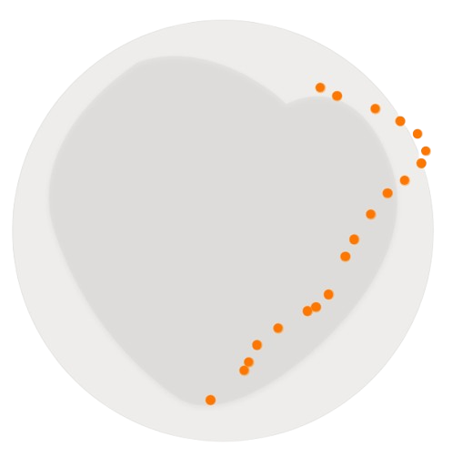

Histórias reais.
Impactos reais.
Mais do que números, lidamos com vidas. O Projeto Mesa Viva já chegou aos pratos de inúmeras famílias brasileiras em situação de vulnerabilidade, garantindo o direito básico e inalienável à alimentação.


PROJETO MESA VIVA.
Mais do que números, lidamos com vidas. O Projeto Mesa Viva já chegou aos pratos de inúmeras famílias brasileiras em situação de vulnerabilidade, garantindo o direito básico e inalienável à alimentação.
Expansão Territorial
Concentramos nossa atuação em 20 regiões litorâneas estratégicas. Muitas dessas áreas, apesar do forte turismo, escondem bolsões de extrema pobreza periférica. Nosso objetivo é criar uma rede de distribuição eficiente, aproveitando rotas costeiras e polos urbanos para levar alimentação às famílias que mais precisam, combatendo a insegurança alimentar de forma direcionada e escalável.
